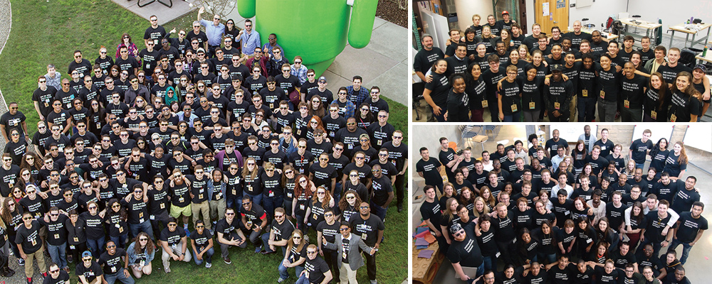

155 Students Named University Innovation Fellows
(February 22, 2016) - 155 students from 47 higher education institutions have been named University Innovation Fellows by the National Center for Engineering Pathways to Innovation (Epicenter).
The University Innovation Fellows program empowers students to become agents of change at their schools. Fellows work to ensure that their peers gain the knowledge, skills and attitudes required to compete in the economy of the future and make a positive impact on the world.
To accomplish this, the Fellows advocate for lasting institutional change and create opportunities for students to engage with innovation, entrepreneurship, design thinking and creativity at their schools. Fellows design innovation spaces, start entrepreneurship organizations, host experiential learning events and work with faculty to develop new courses. Fellows who joined the program in the 2014-15 academic year held 112 events and established 35 spaces at their schools.
The program is run by Epicenter, which is funded by the National Science Foundation and directed by Stanford University and VentureWell. With the addition of the new Fellows, the program has trained 607 students at 143 institutions since the beginning of the Epicenter grant.
“We believe that students can be so much more than just the customers of higher education,” said Humera Fasihuddin, co-leader of the University Innovation Fellows program. “Fellows are acting as co-designers of the higher education experience, and they are actively collaborating with faculty and administrators to make lasting changes at their schools. They utilize their resourcefulness, creativity and national network to make measurable gains, both in the number of resources and the students served by the innovation and entrepreneurship ecosystem.”
Individual Fellows as well as institutional teams of Fellows are sponsored by faculty and administrators and selected through an application process twice annually. Following acceptance into the program, schools fund the students to go through six weeks of online training and travel to the University Innovation Fellows Annual Meetup in Silicon Valley. Throughout the year, they take part in events and conferences across the country and have opportunities to learn from one another, Epicenter mentors, and leaders in academia and industry.
“Through this program, Fellows learn how to analyze their campus ecosystems for new opportunities, understand the needs of stakeholders at their schools, collaborate with peers from different disciplines, and solve problems that have no clear answers,” said Leticia Britos Cavagnaro, co-leader of the University Innovation Fellows program. “All of these mindsets and skills will help Fellows make a difference in higher education as well as in the increasingly complex world that awaits them after graduation.”
The new Fellows join the program from the following schools:
- Beloit College
- Berea College
- Boise State University
- Carnegie Mellon University
- Case Western Reserve University
- Clemson University
- Colorado School of Mines
- Converse College
- Dalhousie University
- Elon University
- Florida Institute of Technology
- Georgia Institute of Technology
- Indiana University - Purdue University Indianapolis
- Kent State University
- Kettering University
- La Salle University
- Lawrence Technological University
- Missouri University of Science and Technology
- Morgan State University
- North Dakota State University
- Ohio Northern University
- Ohio University
- Purdue University
- Quinnipiac University
- Rensselaer Polytechnic Institute
- Saint Louis University
- Southern Illinois University Carbondale
- Spelman College
- Temple University
- Tennessee Technological University
- Texas Tech University
- Texas Tech, South Plains College
- Union College
- University of Dayton
- University of Detroit Mercy
- University of New Haven
- University of North Alabama
- University of North Dakota
- University of Oklahoma
- University of Oregon
- University of Pittsburgh
- Utah Valley University
- Villanova University
- Washington University in St Louis
- Western New England University
- Wichita State University
- Worcester Polytechnic Institute
In late March, students will have the opportunity to participate in the Silicon Valley Meetup, which brings together all Fellows trained in Fall 2015 and Spring 2016. During this meeting, March 17-22, Fellows will take part in immersive experiences at Google and Stanford University’s Hasso Plattner Institute of Design (d.school). They will participate in experiential workshops and exercises focused on topics including movement building, student innovation spaces, design of learning experiences, and new models of change in higher education.
This event will be the first of many times that the Fellows have the opportunity to engage with the d.school at Stanford. After Epicenter’s National Science Foundation grant ends on June 30, 2016, the University Innovation Fellows program will become part of the d.school. Visit bit.ly/UIF-future to read more about the transition. Applications for the Fall 2016 cohort are due on May 2, 2016.
Learn more about the University Innovation Fellows and find out how to apply at universityinnovationfellows.org.
About Epicenter:
The National Center for Engineering Pathways to Innovation (Epicenter) is funded by the National Science Foundation and directed by Stanford University and VentureWell. Epicenter’s mission is to empower U.S. undergraduate engineering students to bring their ideas to life for the benefit of our economy and society. To do this, Epicenter helps students combine their technical skills, their ability to develop innovative technologies that solve important problems, and an entrepreneurial mindset and skillset. Epicenter’s three core initiatives are the University Innovation Fellows program for undergraduate engineering students and their peers; the Pathways to Innovation Program for institutional teams of faculty and university leaders; and the research program Fostering Innovative Generations Studies, which contributes to national knowledge of entrepreneurship and engineering education. Learn more and get involved at epicenter.stanford.edu.
About Stanford University:
At Stanford University, the Epicenter collaboration is managed by the Stanford Technology Ventures Program (STVP), the entrepreneurship center in Stanford’s School of Engineering. STVP delivers courses and extracurricular programs to Stanford students, creates scholarly research on high-impact technology ventures, and produces a large and growing collection of online content and experiences for people around the world. Visit us online at stvp.stanford.edu.
About VentureWell:
VentureWell was founded in 1995 as the National Collegiate Inventors and Innovators Alliance (NCIIA) and rebranded in 2014 to underscore its impact as an education network that cultivates revolutionary ideas and promising inventions. A not-for-profit organization reaching more than 200 universities, VentureWell is a leader in funding, training, coaching and early investment that brings student innovations to market. Inventions created by VentureWell grantees are reaching millions of people in more than 50 countries and helping to solve some of our greatest 21st century challenges. Visit www.venturewell.org to learn how we inspire students, faculty and investors to transform game-changing ideas into solutions for people and the planet.
Media contact:
Laurie Moore
Communications Manager, Epicenter
(650) 561-6113
llhmoore@stanford.edu